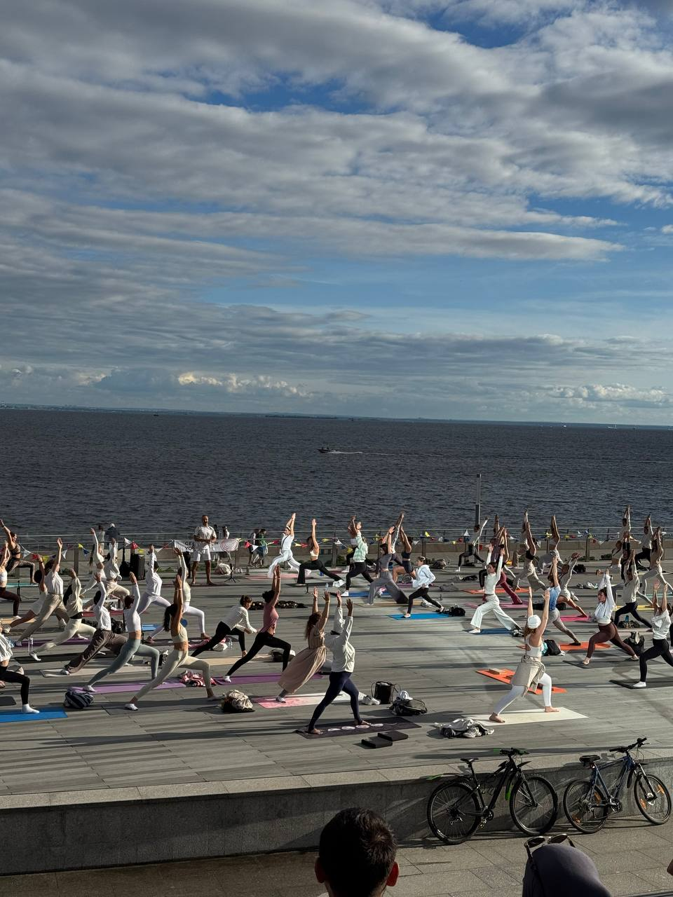

Йога и телесные практики для бизнеса
Забота о команде и впечатления, которые запоминаются. Выберите близкий вам запрос — покажем, что подходит.
Корпоративный wellness — уже не бонус, а стандарт лучших работодателей мира
Google, Salesforce, SAP, Nike, Deloitte и сотни международных компаний инвестируют в программы благополучия сотрудников: йогу, медитацию, практики осознанности и восстановления. Здоровые, вовлечённые и вдохновлённые люди работают эффективнее, реже выгорают и дольше остаются в компании. Исследования Deloitte показывают: забота о благополучии сотрудников стала одним из главных мировых HR-приоритетов.
Generation Yoga с 2013 года создаёт корпоративные wellness-события любого масштаба — от утренней практики для команды до фестивалей здоровья, дней благополучия и выездных ретритов. Берём на себя весь процесс: от идеи и сценария до проведения под ключ.